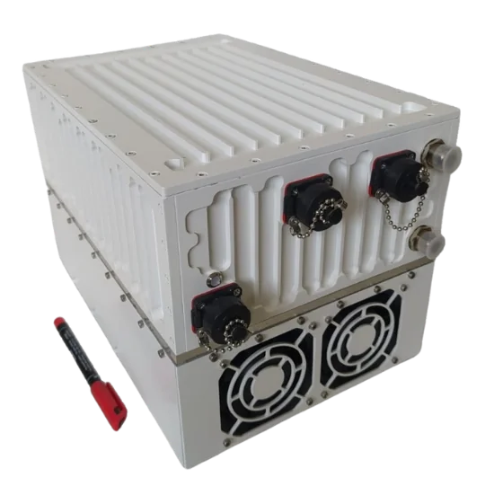
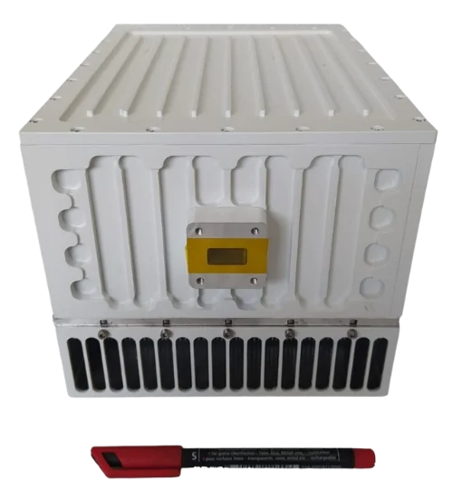
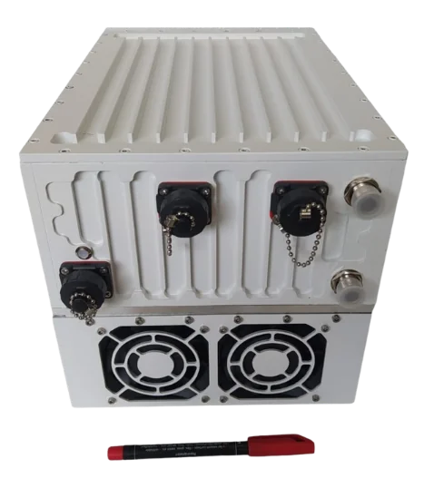

100W L-to-Ku Band Block Up Converter, GaN teknolojisi tabanlıdır. Yüksek verimli GaN solid-state tasarımı, uydu uplink uygulamalarında en yüksek performansı sunar.
GANSAT-100WKU
| RF Frekans | 13.75 – 14.50 GHz |
| Yerel Osilatör | 12.80 GHz |
| Çıkış Gücü | 100W (+50 dBm) |
| IF Konnektör | N-type or F-type |
| Güç Kaynağı | 220V 50Hz AC, 500W typ. |
| Çıkış Arayüzü | WR-75 G |
| Kazanç | 68 dB min, 73 dB nominal |
| IMD3 (Two Tones) | -26 dBc max. 2 signals 5 MHz apart at P-LINEAR |
| L.O. Leakage | -45 dBm max |
| Spurious | -50 dBc max |
| Spektral Büyüme | -30 dBc (QPSK at 1.5x and OQPSK at 1.0x symbol rate offset with 2dB back-off) |
| Dış Referans Gereksinimi | Via IF cable — 10 MHz (sine-wave), -5 to +5 dBm @ input port |
| TX Kazanç Varyasyonu / Sıcaklık Kararlılığı | ± 0.5 dB over 40 MHz / ± 1.8 dB over full band / ± 1.5 dB typ., ± 1.8 dB max. |
| Faz Gürültüsü | -55 dBc/Hz @ 10 Hz · -65 @ 100 Hz · -75 @ 1 kHz · -85 @ 10 kHz · -95 @ 100 kHz · -115 @ 1 MHz |
| Gürültü Güç Yoğunluğu TX / RX | -80 dBm/Hz (max) / -125 dBm/Hz (max) |
| Gürültü Faktörü | 15 dB max |
| Input / Output V.S.W.R. | 2:1 max |
| Mute | L.O. Kilit Kaybında SSPA Kapatma |
| Çalışma / Depolama Sıcaklığı | -40°C to +55°C / -55°C to +85°C |
| Boyutlar | 310 (L) × 240 (W) × 210 (H) mm — 12.2" × 9.45" × 8.25" |
| Ağırlık | 12.75 kg (28.1 lbs) max |
GANSAT-100WEXTKU
| RF Frekans | 13.75 – 14.75 GHz |
| Yerel Osilatör | 12.80 GHz |
| Çıkış Gücü | 100W (+50 dBm) |
| IF Konnektör | N-type or F-type |
| Güç Kaynağı | 220V 50Hz AC, 500W typ. |
| Çıkış Arayüzü | WR-75 G |
| Kazanç | 68 dB min, 73 dB nominal |
| IMD3 (Two Tones) | -26 dBc max. 2 signals 5 MHz apart at P-LINEAR |
| L.O. Leakage | -45 dBm max |
| Spurious | -50 dBc max |
| Spektral Büyüme | -30 dBc (QPSK at 1.5x and OQPSK at 1.0x symbol rate offset with 2dB back-off) |
| Dış Referans Gereksinimi | Via IF cable — 10 MHz (sine-wave), -5 to +5 dBm @ input port |
| TX Kazanç Varyasyonu / Sıcaklık Kararlılığı | ± 0.5 dB over 40 MHz / ± 1.8 dB over full band / ± 1.5 dB typ., ± 1.8 dB max. |
| Faz Gürültüsü | -55 dBc/Hz @ 10 Hz · -65 @ 100 Hz · -75 @ 1 kHz · -85 @ 10 kHz · -95 @ 100 kHz · -115 @ 1 MHz |
| Gürültü Güç Yoğunluğu TX / RX | -80 dBm/Hz (max) / -125 dBm/Hz (max) |
| Gürültü Faktörü | 15 dB max |
| Input / Output V.S.W.R. | 2:1 max |
| Mute | L.O. Kilit Kaybında SSPA Kapatma |
| Çalışma / Depolama Sıcaklığı | -40°C to +55°C / -55°C to +85°C |
| Boyutlar | 310 (L) × 240 (W) × 210 (H) mm — 12.2" × 9.45" × 8.25" |
| Ağırlık | 12.75 kg (28.1 lbs) max |
GANSAT-100WKU, 100W çıkış gücü ve GaN teknolojisiyle sabit ve mobil uydu haberleşme altyapısında yüksek güvenilirlik sunar. 12,75 kg kompakt gövdesiyle 220V/110V AC şebekeden beslenen cihaz; VSAT hub'ları, sahil istasyonları ve hava-zemin iletişim sistemleri için uygundur.
Intelsat IESS-308/309 uyumlu faz gürültüsü ve IMD performansıyla tüm büyük ticari Ku-Band uydu operatörlerinin gereksinimlerini karşılar. Standart KU (13,75–14,50 GHz) ve Genişletilmiş KU (13,75–14,75 GHz) versiyonları, farklı bölgesel uydu erişim ihtiyaçlarına göre seçilebilir.
100W Ku-Band BUC; VSAT hub istasyonları, sahil haberleşme sistemleri, hava-zemin bağlantıları ve sabit broadband uydu uplink uygulamalarında kullanılır. Yüksek EIRP gerektiren ticari uydu haberleşmesinde güç ile kompaktlığı birleştirir.
GaN transistörler, aynı güç sınıfındaki GaAs veya LDMOS tasarımlarına kıyasla daha yüksek güç yoğunluğu, daha iyi ısı yönetimi ve daha düşük güç tüketimi sağlar. Bu sayede GANSAT-100WKU, 12,75 kg ağırlığında 100W çıkış gücü sunarken uzun ömürlü ve güvenilir çalışma imkânı verir.
Standart KU versiyonu (GANSAT-100WKU) 13,75–14,50 GHz aralığını kapsarken, Genişletilmiş KU versiyonu (GANSAT-100WEXTKU) 13,75–14,75 GHz'e kadar çıkar. Genişletilmiş KU, bazı uydu operatörlerinin bölgesel kapsama için kullandığı ek transponder kapasitesini destekler.
Evet. GANSAT-100WKU, Intelsat IESS-308/309 faz gürültüsü gereksinimlerini karşılar: 10 Hz'de -55 dBc/Hz, 1 kHz'de -75 dBc/Hz, 100 kHz'de -95 dBc/Hz. Bu uyumluluk, cihazın komşu kanallarda parazit oluşturmadan büyük ticari Ku-Band uydu transponderlerinde kullanılabilmesini sağlar.